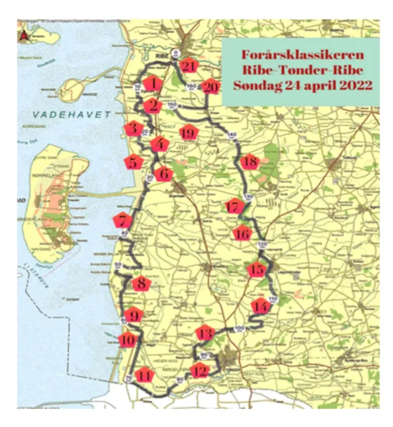

Optakt: Ribe-Tønder-Ribe

Trods sygdom og skader stiller Squadra Molteni op til den danske forårsklassiker “Helvede i sydvest” – det 168 km lange Ribe-Tønder-Ribe, med hele 21 frygtede grus-pavéer.
Oprindeligt skulle Squadra Molteni have stillet med et storhold, der kunne køre sidste års vinder af stålklassen, Jens Langergaard, til endnu en sejr. Men uheld og sygdom har ramt Squadra Molteni op til løbet:
Både Jens Langergaard og Jeppe Thiemer er ramt af domesticenza, mens Eigil Leegaard er ramt af almindelig mandeinfluenza – og de tre ryttere har måtte trække sig.
Kaptajn Bjørnsteen var involveret i et styrt tidligere på ugen, hvor han pådrog sig skader på højre ankel, som stadig er hævet.
Det er klart, at det er hårdt slag for holdet, lyder det fra sportsdirektør Klaus Maarup Kjærsgaard.
Jeg har måtte trække både Jens, Jeppe og Eigil ud af løbet i morgen. Jeg ville også have trykket Kaptajn Bjørnsteen. Men da jeg ringede til ham, blev jeg mødt med: “Harden the fuck up. Jeg kører”.
Ud af det oprindelige 5-mandshold, er det altså nu kun Kaptajn Bjørnsteen og Lars Munch, der stiller til start på torvet ved Ribe Domkirke i morgen.
Jeg er klar. Anklen er hævet og gør lidt ondt. Men så længe jeg kan træde, så kører jeg. Jeg har en belgisk cocktail med i den ene baglomme, så der er no worries, lyder det fra Kaptajn Bjørnsteen. Og jeg ved, at Lars er bomstærk – så han må ud og trække i vinden.
Trods sygdom og skader på holdet, så spås Squadra Moltenis dynamiske duo dog gode chancer for at vinde stålklassen.
Det 168 km lange “Helvede i sydvest” Ribe-Tønder-Ribe køres i morgen søndag 24. april, med start fra Ribe Domkrike kl. 08.30.

